Клуб «Кенcинкан» Сибирская федерация Кендо, Иайдо, Дзедо
Занятия японскими боевыми искусствами Иайдо и Дзедо в Новосибирске
Опыт обучения мирового класса
«Сибирская Федерация Кендо, Иайдо, Дзёдо» основана в 1996 году.
В структуру Федерации входят отделения в Новосибирске, Барнауле, Красноярске, Омске, Томске и Кемерово.
С 2000 года «Сибирская Федерация Кендо, Иайдо, Дзёдо» официально курируется Федерацией Кендо острова Хоккайдо (Япония).
Федерацией периодически проводится «Кубок Сибири» - соревнования по иайдо и дзёдо.
В Новосибирске периодически проводятся семинары по иайдо и дзедо под руководством сенсеев из города Саппоро, побратима Новосибирска.
Участники клуба ежегодно ездят на практические семинары в Японию.
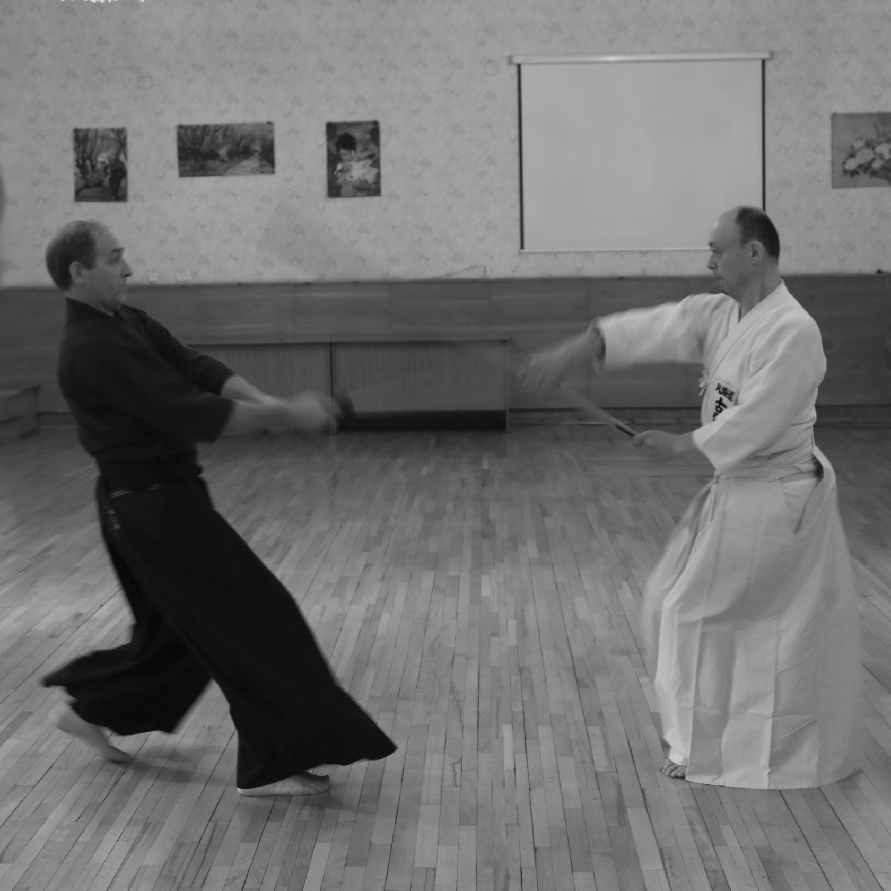
ДЗЁДО
Дзёдо - это искусство фехтования деревянной палкой - "дзё".
Дзёдо не ставит во главу угла атаку, а считает необходимым действовать в зависимости от атаки противника, контролируя ситуацию.
Его ведущий моральный принцип: «Не нанося ран противнику, проучить его и предостеречь».
ИАЙДО
Иайдо - традиционное японское искусство владения двуручным мечом - "катаной".
Задача практикующего иайдо - научиться мгновенно выхватывать меч из ножен и результативно атаковать.
Схватка сводится к нескольким эффективным ударам, после чего меч возвращается в ножны.
В первые годы для обучения иайдо используется не заточенная катана из мягкого металла - "могито" и деревянная имитация меча "бокуто"
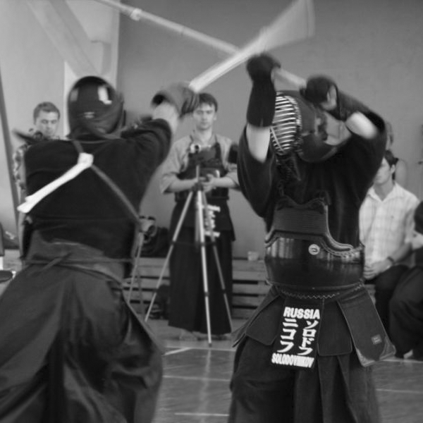
КЕНДО
Японское воинское искусство, основанное на приемах с двуручным самурайским мечом.
Зародилось в Х-ХI веках в Японии.
Современное кендо - это тренировки и поединки, в которых используется бамбуковая имитация двуручного самурайского меча - синай.
Занятия проходят каждую неделю в Новосибирске и Академгородке.
Выбирай подходящую группу и приходи на первое занятие.
Первое занятие бесплатное.
Расписание
Инструкторы
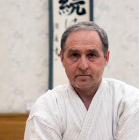
Игорь Федорич
Директор «Сибирской Федерации Кендо, Иайдо, Дзёдо»,
представитель технической комиссии РФК по иайдо и дзёдо в Сибирском регионе,
5 дан иайдо,
5 дан дзедо
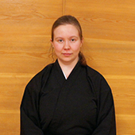
Ирина Шкурина
Инструктор иайдо, 4 дан иайдо
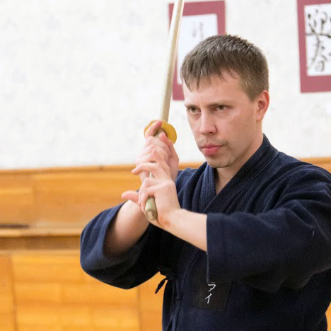
Николай Мордвин
Инструктор иайдо, 3 дан иайдо, 2 дан дзёдо
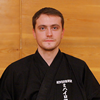
Максим Михайлов
Инструктор иайдо, 3 дан иайдо
Наши японские сенсеи
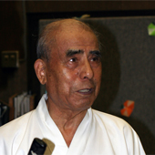
Окуда сенсей
8 дан иайдо, ханси, город Саппоро, Япония
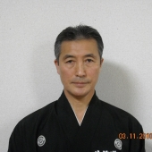
Кавамура сенсей
8 дан иайдо, кёси, город Саппоро, Япония
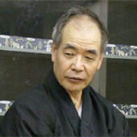
Ёкота сенсей
8 дан иайдо, кёси, 7 дан дзёдо кёси, город Саппоро, Япония
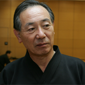
Тамура сенсей
7 дан иайдо, кёси, город Саппоро, Япония
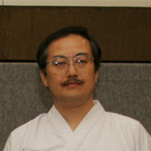
Касахара сенсей
7 дан иайдо, кёси, город Саппоро, Япония
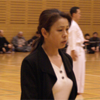
Хасегава сенсей
7 дан иайдо, ренси, город Саппоро, Япония
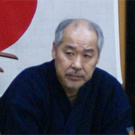
Ясумару сенсей
8 дан дзёдо, кёси, город Саппоро, Япония
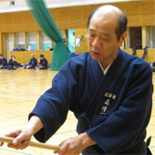
Морикава сенсей
7 дан дзёдо, кёси, город Саппоро, Япония
Еженедельные занятия
Это график наших занятий. Вы можете присоединиться к нам!
Понедельник
20:00 - 21:30 Занятия по Иайдо в центре «Сибирь-Хоккайдо»
20:00 - 22:00 Занятия по Кендо в ДК «Строитель»
Среда
20:00 - 22:00 Занятия по Кендо в ДК «Строитель»
Четверг
20:00 - 21:30 Занятия по Иайдо в центре «Сибирь-Хоккайдо»
Пятница
20:00 - 22:00 Занятия по Кендо в ДК «Строитель»
Суббота
10:30 - 12:00 Занятия по Иайдо в центре «Сибирь-Хоккайдо»
Воскресенье
14:30 - 16:00 Занятие по Иайдо и Дзёдо в новом спортивном комплексе НГУ
15:30 - 17:00 Занятия по Иайдо в центре «Сибирь-Хоккайдо»
17:00 - 20:00 Занятия по Дзёдо в центре «Сибирь-Хоккайдо»
Экзамены и соревнования
Все занимающиеся могут сдать экзамены в Новосибирске до первого кю включительно.
Экзамены на дан занимающиеся традиционно сдают в Японии в Саппоро, городе побратиме Новосибирска.
Участники федерации ежегодно принимают участие как во всероссийских соревнованиях,
так и в дружеских турнирах Новосибирск – Саппоро.
Ежегодно Сибирская федерация Кендо, Иайдо, Дзёдо проводит в Новосибирске «Кубок Сибири».
Dane Grade
Вопросы
1
Как начать заниматься? Необходимо ли записываться заранее?
Первая ознакомительная тренировка по любой дисциплине бесплатна.
Записываться заранее не надо.
Выбирайте удобное для вас время и место в нашем расписании и просто приходите.
2
Что нужно иметь при себе на первой тренировке?
Для первой тренировке необходима любая спортивная форма.
Тренировки проходят босиком, поэтому в спортивной обуви нет необходимости.
На первых занятиях мы выдадим вам необходимое оружие, поэтому вопрос его приобретения можно отложить.
Но самое главное иметь желание и интерес к тренировкам.
3
Какой инвентарь мне необходимо будет приобрести?
Если после первых пробных занятий вы решите дальше практиковать иайдо или дзедо, вам необходимо будет приобрести в магазинах нашего города следующее.
В зависимости от дисциплины, вам потребуется боккен или дзё.
Вместо спортивной одежды, со временем, можно приобрести комплект из хакама (штаны) и кейкоги (куртка).
«Сибирская Федерация Кендо,
Иайдо, Дзёдо»
Клуб «Кенсинкан»,
город Новосибирск
Центр «Сибирь-Хокайдо»
ул. Шевченко, д. 28/1
Новый спортивный комплекс НГУ
второй этаж
ул. Пирогова, д. 12/1